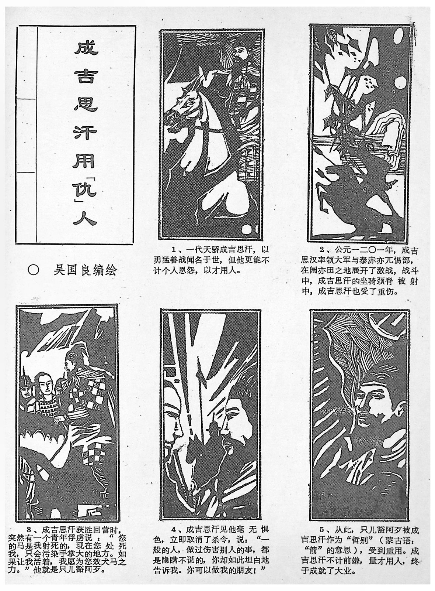

吴国良编绘 《人事》1988年第4期（总第31期），封三
成吉思汗用“仇”人
Genghis Khan Employs an “Enemy”
- Panel text
- 1、一代天骄成吉思汗，以勇猛善战闻名于世，但他更能不计个人恩怨，以才用人。
1. Genghis Khan, the pride of his age, was famed throughout the world for his bravery in battle — but even more for setting aside personal grudges and employing people for their talent. - 2、公元一二〇一年，成吉思汗率领大军与泰赤亦兀惕部，在阔亦田之地展开了激战，战斗中，成吉思汗的坐骑颈脊被射中，成吉思汗也受了重伤。
2. In 1201 Genghis Khan led his army in a fierce battle against the Tayichi'ud at Köyiten. During the fighting his horse was shot in the neck, and Genghis Khan himself was badly wounded. - 3、成吉思汗获胜回营时，突然有一个青年俘虏说：“您的马是我射死的，现在您处死我，只会污染手掌大的地方。如果让我活着，我愿为您效犬马之力。”他就是只儿豁阿歹。
3. As the victorious Genghis Khan returned to camp, a young prisoner suddenly said: “It was I who shot your horse. If you put me to death now, I will stain only a patch of ground the size of a palm. If you let me live, I will serve you like a dog or a horse.” He was Jirqo'adai. - 4、成吉思汗见他毫无惧色，立即取消了杀令，说：“一般的人，做过伤害别人的事，都是隐瞒不说的，你却如此坦白地告诉我。你可以做我的朋友！”
4. Seeing that he showed no fear, Genghis Khan at once cancelled the order to kill him, saying: “Most people who have harmed someone hide it and say nothing, but you have told me frankly. You can be my friend!” - 5、从此，只儿豁阿歹被成吉思汗作为“哲别”（蒙古语：“箭”的意思），受到重用。成吉思汗不计前嫌，量才用人，终于成就了大业。
5. From then on Jirqo'adai served Genghis Khan as “Jebe” (Mongolian for “arrow”) and was given important posts. By putting old grudges aside and employing people according to their ability, Genghis Khan at last achieved his great enterprise.
- 1、一代天骄成吉思汗，以勇猛善战闻名于世，但他更能不计个人恩怨，以才用人。
- Description
- Five-panel picture story in woodcut style: a young prisoner confesses that he shot Genghis Khan's horse in battle; the khan spares him for his honesty and makes him one of his generals.
- Note
- The prisoner, Jirqo'adai, became the general Jebe (“arrow”), according to the Secret History of the Mongols. The lesson for 1988: employ talent regardless of personal grudges.
- Artist
- Wu Guoliang 吴国良 (adapted and drawn)
- Published in
- 《人事》1988年第4期（总第31期）, inside back cover
- Themes
- Talent and its neglect · Exemplary history · Picture stories (连环画)

Cite
Wu Guoliang, “成吉思汗用“仇”人” [Genghis Khan Employs an “Enemy”], Renshi (Personnel) 《人事》, 1988, no. 4, inside back cover.